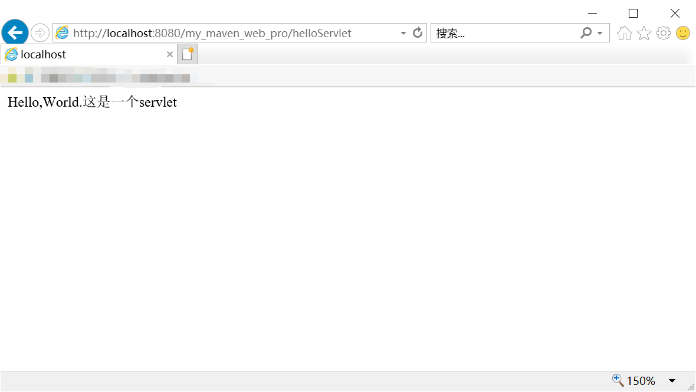

Tomcat的下载和配置
一种web服务器。[ 下载地址 ]: http://tomcat.apache.org/。下载版本Tomcat9 64-bit Windows zip。下载完成后解压在D盘。
检查环境变量JAVA HOME是否设置。
启动服务：进入bin目录，点击startup.bat。第一次打开会显示日志中文乱码，需要修改配置文件conf/logging.properties，找到java.util.logging.ConsoleHandler.encoding = UTF-8并注释掉即可。
Tomcat成功启动，不要关闭bat，在浏览器中验证服务，输入http://localhost:8080（默认端口是8080），看到如下画面，表明Tomcat已经打开了：
创建Web项目
1. 手动形式
打开tomcat目录的webapp目录。新建一个项目文件夹myweb。在项目文件夹下放入资源，在浏览器中访问资源路径即可查看资源。
例如，将tomcat.png放入myweb文件夹中，重启tomcat，接着在浏览器中访问http://localhost:8080/myweb/tomcat.png。效果如下：
如果要通过外网访问，需要web服务器。这里先不做说明。
接下来，可以在myweb里面写一些html网页。例如：
1 | <html> |
重启tomcat，浏览器访问localhost:8080/myweb/index.html或者localhost:8080/myweb（默认访问index.html）：
2. 自动构建（使用IDEA）
用Maven新建一个项目，操作如下：

点击Finish，完成创建。
观察项目结构：
在pom.xml中可以修改项目配置。
HTML网页
在src/webapp下新建index.html如下：
1 |
|
接着在右上角的绿色小锤子旁边配置web项目服务器。
点击左上角的加号，选择Tomcat Server->Local，进行下面的配置：
发现下面出现了warning，点击查看，发现是没有选择项目发布的artifacts，这里选择exploded。
修改发布路径。
完成配置，发现下面出现了Tomcat服务，可以点击右上角绿色的播放键运行服务器了。
弹出之前写的html界面。

Tomcat会默认访问index页面。
JSP网页
接下来我们创建一个JSP页面。
1 | <%-- |
更改过资源后，需要重新发布项目。点击服务中的update图标，选择redeploy重新发布项目。
重新发布后，访问http://localhost:8080/my_maven_web_pro/Hello.jsp，就可以看到新的页面了。
Servlet
在main目录底下创建名为java的文件夹，并标记成为source root文件夹（右键->mark directory as->source root），用于编写java源码。
在java文件夹中新建package，我这里叫com.nervar.servlet，在包中新建class HelloServlet如下：
1 | package com.nevar.servlet; |
可以在maven中下载需要的包HttpServlet。
在src/webapp/WEB-INF/web.xml中添加servlet配置：
1 |
|
其中，servlet-name指当前servlet的名称，servlet-class标签内配置的是链接的servlet类，servlet-mapping中url-pattern指定访问servlet的url。
重新发布项目，访问http://localhost:8080/my_maven_web_pro/helloServlet，可以看到刚刚编写的servlet：
